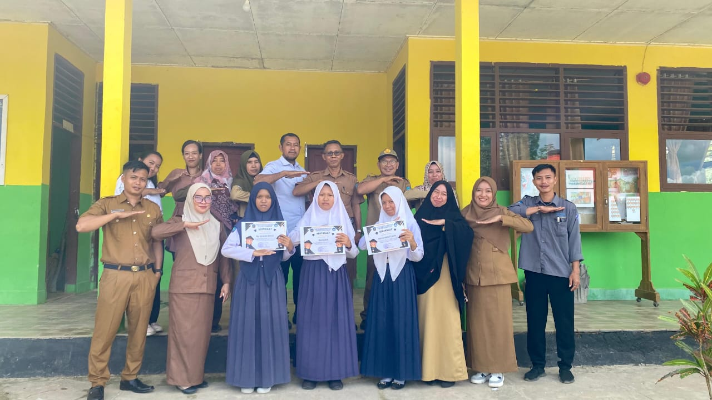
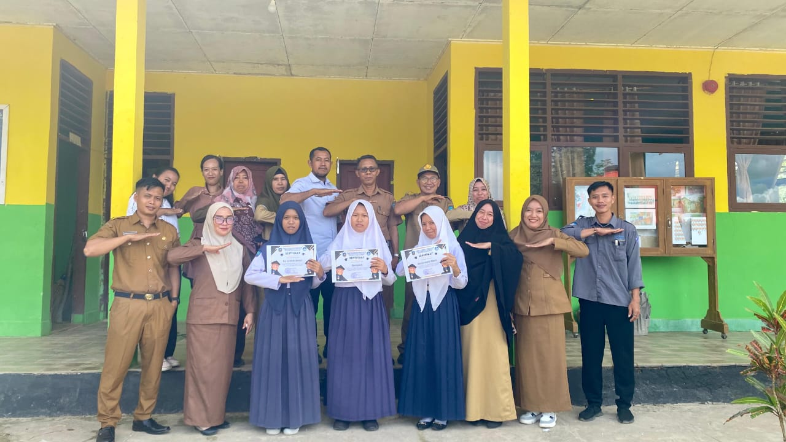
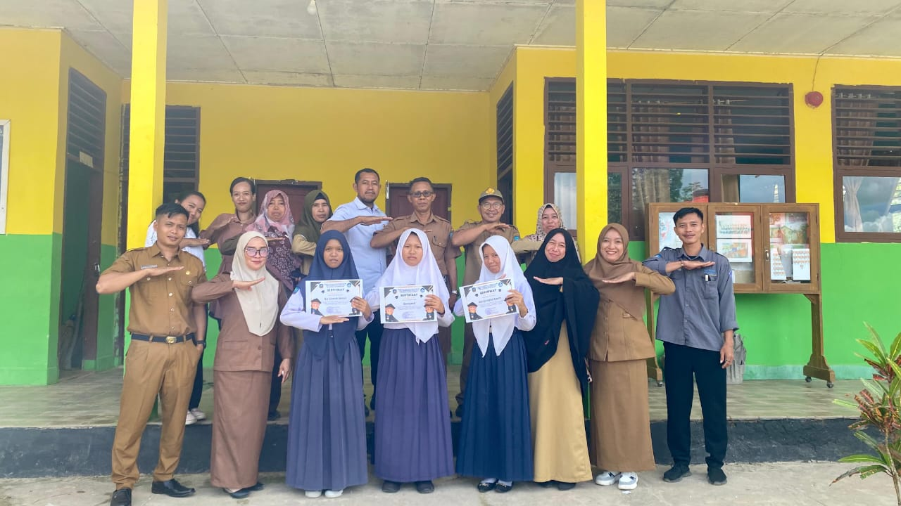
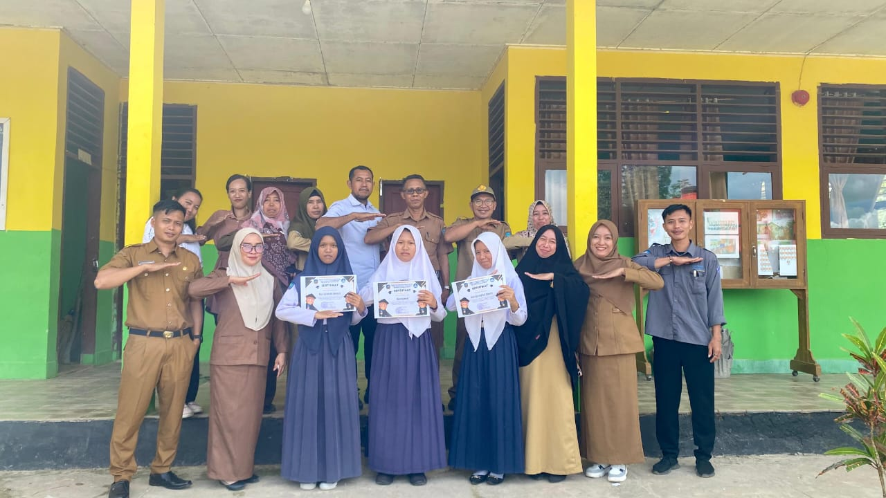

.jpg) 


 


Salam sejahtera bagi kita semua,
Puji syukur ke hadirat Tuhan Yang Maha Esa, karena atas rahmat-Nya SMP Negeri 20 Konawe Selatan terus berkomitmen memberikan layanan pendidikan terbaik bagi generasi muda. Website ini menjadi media informasi dan komunikasi yang memudahkan masyarakat mengakses berbagai kegiatan, program, dan pencapaian sekolah.
Kami berharap kehadiran website ini dapat menjadi penghubung yang baik antara sekolah, orang tua, dan masyarakat. Mari kita bersama menciptakan lingkungan belajar yang berkualitas, aman, dan berkarakter demi masa depan anak-anak kita.
Salam Sehat.
- I Nyoman Sukanada, S.Pd. -
SMP Negeri 20 Konawe Selatan merupakan lembaga pendidikan tingkat menengah pertama yang berlokasi di Kabupaten Konawe Selatan, Sulawesi Tenggara. Sekolah ini berkomitmen untuk menciptakan lingkungan belajar yang aman, nyaman, dan inspiratif bagi seluruh peserta didik.
Dengan didukung oleh tenaga pendidik yang profesional dan fasilitas yang memadai, SMPN 20 Konawe Selatan berupaya menanamkan nilai-nilai keilmuan, karakter, serta kepedulian terhadap lingkungan dan budaya lokal.
Melalui berbagai program unggulan baik akademik maupun non-akademik, sekolah ini terus mendorong siswa untuk berkembang secara holistik demi menjadi generasi yang cerdas, berdaya saing, dan berakhlak mulia.